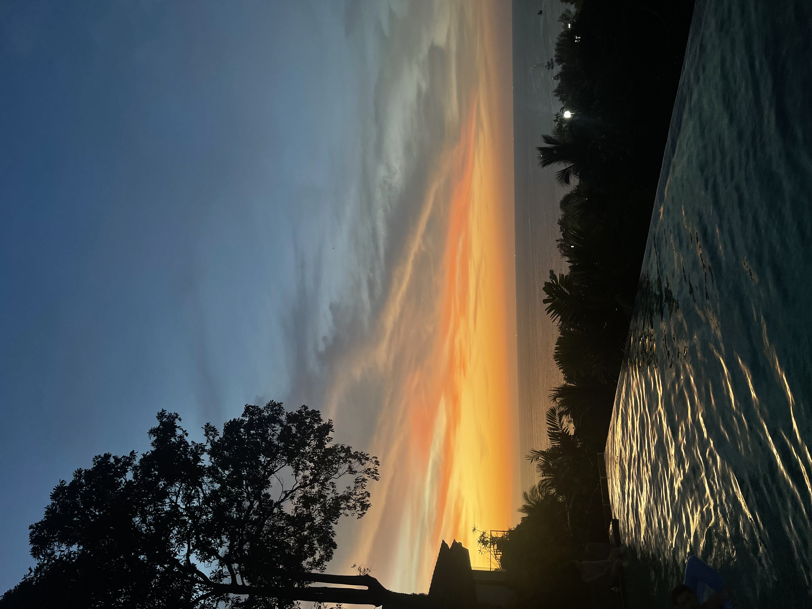

Bangkok
Onze reis begon in het bruisende Bangkok, een stad die schittert met fonkelende lichten en een
overvloed aan cultuur en smaken. Hier ontdekten we de iconische tempels, proefden we heerlijk
straatvoedsel en lieten we ons onderdompelen in de lokale cultuur. Bangkok was het sprankelende
vertrekpunt van ons avontuur door Thailand, vol belofte en opwinding.

Chiang Mai
Vanuit het bruisende Bangkok vervolgden we onze reis naar het betoverende Chiang Mai, een stad die
een totaal andere sfeer ademt. Gelegen te midden van weelderige bergen en omgeven door weidse
rijstvelden, bood Chiang Mai een serene ontsnapping aan de drukte. In Chiang Mai verkenden we
eeuwenoude tempels, zoals de serene Wat Phra Singh en de adembenemende Wat Phrathat Doi Suthep, die
hoog boven de stad uitsteekt. Hier dompelden we ons onder in meditatieve rust en bewonderden we de
ingewikkelde kunst en architectuur die deze heilige plaatsen omringde. De stad staat ook bekend om
zijn levendige straatmarkten, waar we handgemaakte ambachten, kleurrijke kleding en smakelijke
noedelgerechten ontdekten. Chiang Mai bood ons ook de kans om deel te nemen aan authentieke Thaise
kooklessen en om te genieten van de rustgevende sfeer van traditionele spa's. Chiang Mai is een
plaats van schoonheid, spiritualiteit en authenticiteit. Hier vonden we een vredige balans tussen
ontdekking en ontspanning, en het liet ons kennismaken met de betoverende ziel van Noord-Thailand.

Surat Tahni
Surat Thani, een verborgen schat in Zuid-Thailand, was een van de verrassende juweeltjes van onze
reis. Gelegen aan de oostkust van het schiereiland en grenzend aan de Golf van Thailand, bood Surat
Thani een unieke kijk op de Thaise levensstijl en natuurlijke schoonheid. De stad zelf was een
charmante mix van traditionele markten en moderne voorzieningen. We dwaalden door de straten en
proefden lokale lekkernijen op de kleurrijke markten, waar verse producten en exotische kruiden
overal te vinden waren. Een hoogtepunt van Surat Thani was de mogelijkheid om de omliggende natuur
te verkennen. We gingen op avontuurlijke boottochten over de kronkelende rivieren en bezochten
afgelegen dorpen verscholen in de weelderige jungle. Een hoogtepunt was de ontmoeting met de
vriendelijke lokale bevolking, die ons gastvrij verwelkomde in hun gemeenschap. Surat Thani bleek
een prachtige tussenstop te zijn op onze reis, een plek die ons dieper in het hart van Thailand
bracht en ons herinnerde aan de verborgen schatten die dit land te bieden heeft.

Phuket
Als laatste halte van onze reis leidde het pad ons naar het adembenemende eiland Phuket. Met zijn
azuurblauwe wateren, uitgestrekte witte zandstranden en weelderige groene heuvels, bood Phuket de
perfecte afsluiting van onze avontuurlijke reis door Thailand. Op Phuket werden we begroet door de
zachte bries en het geluid van de golven die de kust kusten. We brachten onze dagen door met luieren
op de zonovergoten stranden, waar we genoten van verfrissende duiken in de zee en ontspannen
wandelingen langs de kustlijn. De avonden op Phuket waren gevuld met bruisende nachtmarkten, live
muziek en overheerlijke zeevruchten. We verkenden de kleurrijke straten van Patong Beach en
bezochten rustigere baaien waar we de zonsondergang bewonderden terwijl de lucht in warme tinten
kleurde. Phuket bood ons de perfecte mix van ontspanning en opwinding. Het was de ideale plek om
onze reis af te sluiten, met herinneringen aan de schoonheid van de natuur en de warmte van de
Thaise gastvrijheid die we zullen koesteren.
